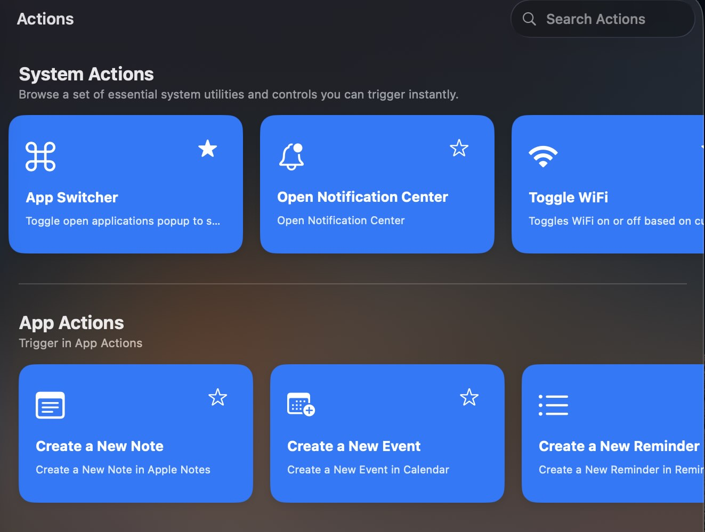

01Why Apple's Default Hot Corners Fall Short
Under Fitts's Law, screen edges and corners are the fastest targets on any display because your pointer can't overshoot them. Yet Apple's built-in Hot Corners have barely evolved in decades:
Only 4 Corners
All four display edges sit completely unused—wasting huge perimeter real estate on modern MacBooks and monitors.
Tiny Action List
You're stuck with a handful of presets—no app launching, custom hotkeys, Apple Shortcuts, OCR, or scripts.
Accidental Triggers
Zero hover delay and no app exclusions mean reaching for a browser tab or menu can lock your screen by mistake.
02Meet Zones&Corners: 8 Perimeter Slots & 76 Actions
Built natively in Swift and SwiftUI for macOS 13.0 (Ventura) or later, Zones&Corners lives quietly in your menu bar and doubles your trigger slots by adding four Screen Edge Zones alongside all four corners—backed by 76 built-in actions across 7 categories.
Spotlight & App Switcher
Flick upward to trigger the visual Spaces App Switcher, Spotlight Search, or Control Center.
Window Maximize & Notes
Maximize windows (with or without hiding the Dock), toggle Notification Center, or open Paste Box.
Previous Space & Shortcuts
Glide left to jump to your Previous Desktop Space, reveal your desktop, or fire an Apple Shortcut.
Next Space, OCR & Color
Jump to your Next Desktop Space, grab on-screen text with Vision OCR, or sample a color swatch.

03Built-In Power Tools Beyond Simple Triggers
Zones&Corners ships dedicated native macOS utilities ready to bind to any corner, edge zone, or Favorite:
Visual App Switcher & Clean RAM
Groups open apps by macOS Space in MRU order, displays live per-app RAM and system memory pressure, closes individual or all apps, and cleans residual processes.
On-Screen Text Extractor
Drag over any image, PDF, or video frame to copy recognized text immediately, backed by a floating 20-item Recent Extractions history.
Screen Color Picker + Swatches
Sample any pixel in Hex, RGB, RGBA, HSL, or HSLA with a floating Recent Colors history panel storing up to 20 swatches.
Templates, Tiling & Text Count
Run Apple Shortcuts, AppleScripts, Terminal commands, simulated hotkeys, window maximization, or instant clipboard word/character/reading-time counts.

04Misfire-Proof Controls & Conflict Protection
No more holding modifier keys just to keep corners from firing unexpectedly. Dial in exact behavior inside Settings:
Trigger Delay & Sensitivity
Set a Trigger Delay Timer (0–5.0s) so brief cursor brush-pasts are ignored, and tune Corner (3–10) and Zone (3–8) sensitivity sliders independently.
Ignored Apps & Conflict Guard
Auto-pause triggers inside full-screen games or creative tools via Ignored Applications, while built-in conflict checks protect your existing macOS System Hot Corners.


Need quick access to more than 8 actions? Click the star icon on any action in the Actions tab to trigger it anytime from the Favorites submenu in your menu bar.
05Setup in 3 Quick Steps
Install the Apple-Notarized DMG
Download Zones&Corners.dmg and drag Zones&Corners to /Applications. Signed and notarized—launch the free demo immediately with no payment info.
Grant Accessibility Permission
Enable Zones&Corners in System Settings > Privacy & Security > Accessibility (plus standard Screen Recording or Automation prompts only if you use OCR, Color Picker, or scripting).
Assign Slots & Tune Feedback
Open Corners or Zones from the menu bar to assign actions, then customize Trigger Delay, Ignored Apps, visual overlays, and sound feedback in Settings.
06Apple Default vs. Zones&Corners
| Capability | macOS Default | Zones&Corners |
|---|---|---|
| Trigger Slots | 4 Corners only | 8 Slots (4 Corners + 4 Edges) |
| Built-In Actions | Handful of presets | 76 Actions + Menu Bar Favorites |
| Custom Automations | Quick Note only | Apps, URLs, Shortcuts, Hotkeys & Scripts |
| Built-In Power Tools | None | Spaces Switcher + Clean RAM, OCR, Color Picker |
| Misfire Safeguards | Modifier hold only | 0–5s Delay, Sensitivity Sliders & Ignored Apps |
| Feedback & Conflicts | None | Conflict Guard + 8-Color Overlay & 14 Sounds |
07Frequently Asked Questions
Can you trigger macOS Shortcuts and AppleScripts from Hot Corners?
Yes. Zones&Corners includes configurable Template actions for Apple Shortcuts, AppleScripts, Terminal commands, simulated hotkeys, launching apps, and opening folders, files, or URLs.
How do you prevent accidental Hot Corner triggers on Mac?
Set a Trigger Delay Timer (0–5.0s), dial in separate corner and edge sensitivity sliders, and add apps like games or design tools to Ignored Applications so triggers auto-pause while they're active.
Will Zones&Corners conflict with Apple's built-in Hot Corners?
No. Zones&Corners automatically detects existing macOS System Hot Corners, prevents accidental slot collisions in the grid, and lets you review them during onboarding.
Does Zones&Corners require disabling System Integrity Protection (SIP)?
No. It runs purely in user space via standard macOS Accessibility APIs (plus Screen Recording or Automation only if you use capture, OCR, color-picker, or scripting actions)—zero SIP changes or kernel extensions.